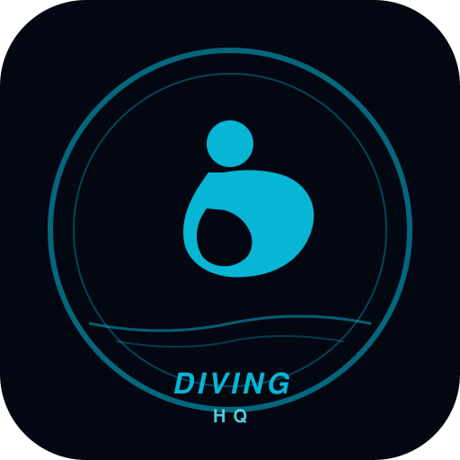
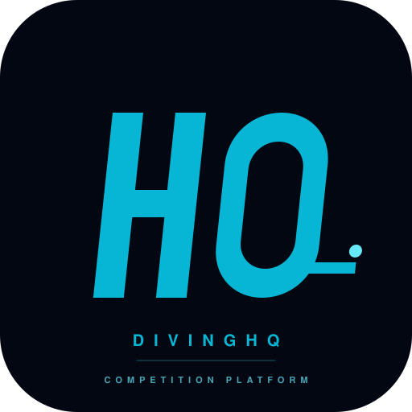
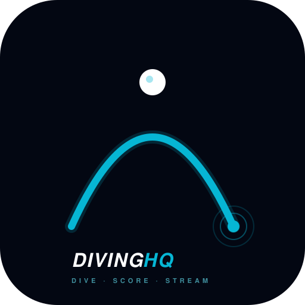
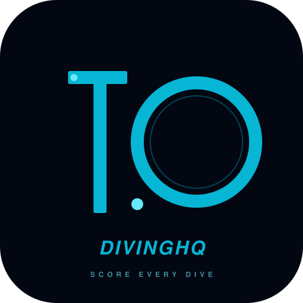

Four directions explored, Option C
(Arc + dot) picked. The final mark lives in
public/icon.svg with the wordmark refined to
match the DivingHQ brand colour rhythm (DIVING white, HQ cyan).
The other three SVGs in this folder are kept for reference.
Each card shows its option at the sizes it would actually live at — favicon (16px), browser tab (32px), PWA home-screen (64-128px), and splash (256px) — plus a monochrome print test on white.
Tucked-position diver inside a circular badge. Reads "federation seal / headquarters" — feels institutional and sport-y. Most literal of the four; instantly readable as "a diving thing."

16px
Bold italic H Q letterforms with a single
dive-board tail off the Q. Modernist / Linear / Stripe
sensibility. Best of the four for tiny favicon use —
reads as a clear, contrasty mark down to 16px. The
diving reference is subtle until you look twice.

16pxThe path of a dive reduced to its essential form — a parabolic arc with a cyan dot at apex (take-off) and a ripple at entry. Most abstract of the four. Works brilliantly at every scale because the geometry is so simple. Apple SF Symbols / Notion sensibility.

16pxThe perfect score baked into the mark. The "1" is a stylised diving platform; the "0" is a circle / splash ripple. Competitive divers, judges, and federations parse the "10.0" reference instantly; spectators see "10" and absorb "scoring / competition" at the gut level. Most brand-specific of the four.

16pxTo preview locally: open docs/logo-options/preview.html from the repo root. Each card scales the same SVG to four sizes via CSS — what you see in the 16px column is what a browser tab + macOS dock would render. The monochrome card at the bottom is a federation-program-print test: if the mark can't survive 100% grayscale on white at 64px, it fails for the offline use case.